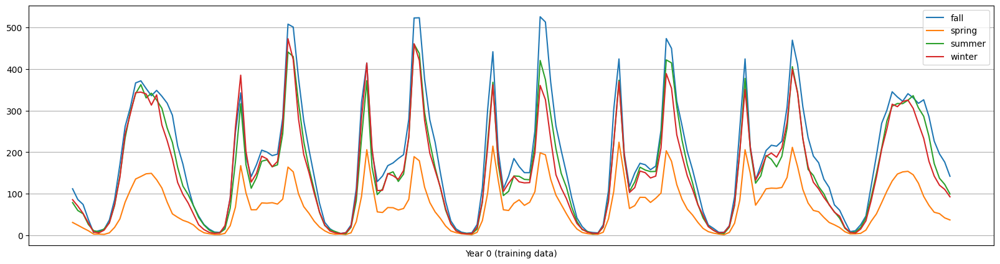
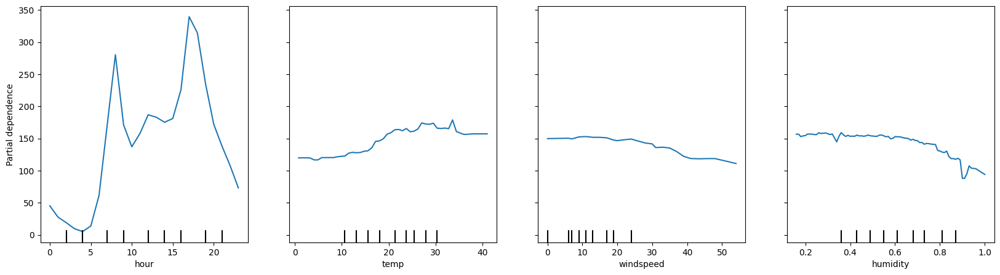
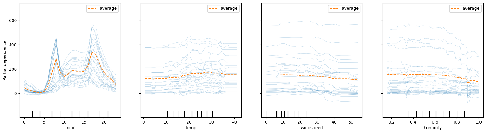
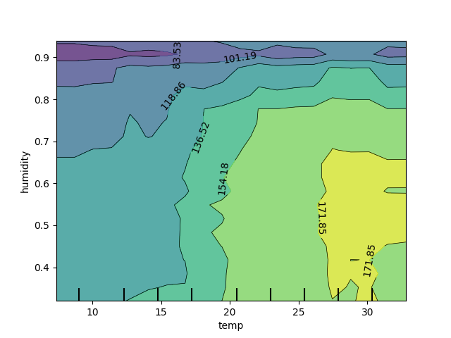
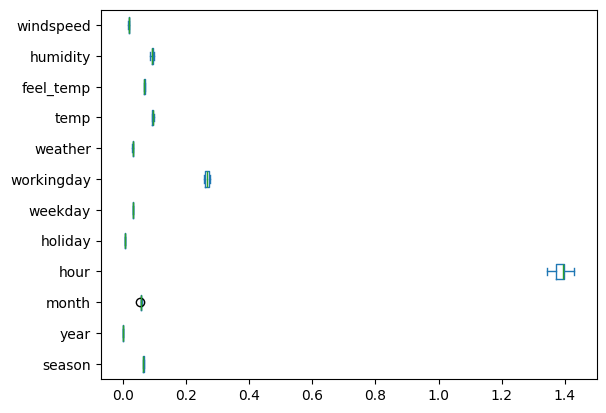

Boosted Ensembles#
Continuing on with our work with classifiers and ensembles today we introduce boosted models, a powerful collection of tree based models that learn in sequence.
# !pip install xgboost
import numpy as np
import pandas as pd
import matplotlib.pyplot as plt
from sklearn.linear_model import LogisticRegression
from sklearn.pipeline import Pipeline
from sklearn.preprocessing import StandardScaler, OneHotEncoder
from sklearn.compose import make_column_transformer
from sklearn.model_selection import train_test_split
Gradient Boosted Models#

from sklearn.ensemble import HistGradientBoostingClassifier, HistGradientBoostingRegressor
from xgboost import XGBClassifier, XGBRegressor
from sklearn.datasets import fetch_california_housing, load_breast_cancer
from sklearn.datasets import fetch_openml
bikes = fetch_openml("Bike_Sharing_Demand", version=2, as_frame=True).frame
bikes.head()
| season | year | month | hour | holiday | weekday | workingday | weather | temp | feel_temp | humidity | windspeed | count | |
|---|---|---|---|---|---|---|---|---|---|---|---|---|---|
| 0 | spring | 0 | 1 | 0 | False | 6 | False | clear | 9.84 | 14.395 | 0.81 | 0.0 | 16 |
| 1 | spring | 0 | 1 | 1 | False | 6 | False | clear | 9.02 | 13.635 | 0.80 | 0.0 | 40 |
| 2 | spring | 0 | 1 | 2 | False | 6 | False | clear | 9.02 | 13.635 | 0.80 | 0.0 | 32 |
| 3 | spring | 0 | 1 | 3 | False | 6 | False | clear | 9.84 | 14.395 | 0.75 | 0.0 | 13 |
| 4 | spring | 0 | 1 | 4 | False | 6 | False | clear | 9.84 | 14.395 | 0.75 | 0.0 | 1 |
df = bikes[bikes['year'] == 0]
fig,ax = plt.subplots(figsize = (20, 5))
average_bike_rentals = df.groupby(
["year", "season", "weekday", "hour"], observed=True
).mean(numeric_only=True)["count"]
average_bike_rentals.groupby(['season'], observed = True).plot(legend = True)
plt.xticks([], [])
plt.xlabel('Year 0 (training data)')
plt.grid();

bikes.info()
<class 'pandas.core.frame.DataFrame'>
RangeIndex: 17379 entries, 0 to 17378
Data columns (total 13 columns):
# Column Non-Null Count Dtype
--- ------ -------------- -----
0 season 17379 non-null category
1 year 17379 non-null int64
2 month 17379 non-null int64
3 hour 17379 non-null int64
4 holiday 17379 non-null category
5 weekday 17379 non-null int64
6 workingday 17379 non-null category
7 weather 17379 non-null category
8 temp 17379 non-null float64
9 feel_temp 17379 non-null float64
10 humidity 17379 non-null float64
11 windspeed 17379 non-null float64
12 count 17379 non-null int64
dtypes: category(4), float64(4), int64(5)
memory usage: 1.3 MB
X = bikes.drop(columns = 'count')
y = bikes['count']
train = bikes[bikes['year'] == 0]
test = bikes[bikes['year'] == 1]
X_train = train.drop(columns = 'count')
y_train = train['count']
X_test = test.drop(columns = 'count')
y_test = test['count']
reg = XGBRegressor(enable_categorical=True)
reg.fit(X_train, y_train)
XGBRegressor(base_score=None, booster=None, callbacks=None,
colsample_bylevel=None, colsample_bynode=None,
colsample_bytree=None, device=None, early_stopping_rounds=None,
enable_categorical=True, eval_metric=None, feature_types=None,
gamma=None, grow_policy=None, importance_type=None,
interaction_constraints=None, learning_rate=None, max_bin=None,
max_cat_threshold=None, max_cat_to_onehot=None,
max_delta_step=None, max_depth=None, max_leaves=None,
min_child_weight=None, missing=nan, monotone_constraints=None,
multi_strategy=None, n_estimators=None, n_jobs=None,
num_parallel_tree=None, random_state=None, ...)In a Jupyter environment, please rerun this cell to show the HTML representation or trust the notebook. On GitHub, the HTML representation is unable to render, please try loading this page with nbviewer.org.
XGBRegressor(base_score=None, booster=None, callbacks=None,
colsample_bylevel=None, colsample_bynode=None,
colsample_bytree=None, device=None, early_stopping_rounds=None,
enable_categorical=True, eval_metric=None, feature_types=None,
gamma=None, grow_policy=None, importance_type=None,
interaction_constraints=None, learning_rate=None, max_bin=None,
max_cat_threshold=None, max_cat_to_onehot=None,
max_delta_step=None, max_depth=None, max_leaves=None,
min_child_weight=None, missing=nan, monotone_constraints=None,
multi_strategy=None, n_estimators=None, n_jobs=None,
num_parallel_tree=None, random_state=None, ...)reg.score(X_train, y_train)
0.9789959788322449
reg.score(X_test, y_test)
0.6463150978088379
PROBLEM
What should we do if we want to improve performance? See here
Inspecting Results#
reg.feature_importances_
array([0.06592979, 0. , 0.03411739, 0.27398434, 0.01827372,
0.0154194 , 0.28702936, 0.06249612, 0.08871585, 0.12923817,
0.01873765, 0.00605831], dtype=float32)
pd.DataFrame({'feature': X_train.columns.tolist(), 'importance': reg.feature_importances_}).sort_values(by = 'importance', ascending = False)
| feature | importance | |
|---|---|---|
| 6 | workingday | 0.287029 |
| 3 | hour | 0.273984 |
| 9 | feel_temp | 0.129238 |
| 8 | temp | 0.088716 |
| 0 | season | 0.065930 |
| 7 | weather | 0.062496 |
| 2 | month | 0.034117 |
| 10 | humidity | 0.018738 |
| 4 | holiday | 0.018274 |
| 5 | weekday | 0.015419 |
| 11 | windspeed | 0.006058 |
| 1 | year | 0.000000 |
from sklearn.inspection import PartialDependenceDisplay, permutation_importance
X_test.head()
| season | year | month | hour | holiday | weekday | workingday | weather | temp | feel_temp | humidity | windspeed | |
|---|---|---|---|---|---|---|---|---|---|---|---|---|
| 8645 | spring | 1 | 1 | 0 | False | 0 | False | clear | 14.76 | 18.940 | 0.66 | 0.0000 |
| 8646 | spring | 1 | 1 | 1 | False | 0 | False | clear | 14.76 | 17.425 | 0.66 | 8.9981 |
| 8647 | spring | 1 | 1 | 2 | False | 0 | False | clear | 13.12 | 17.425 | 0.76 | 0.0000 |
| 8648 | spring | 1 | 1 | 3 | False | 0 | False | clear | 12.30 | 16.665 | 0.81 | 0.0000 |
| 8649 | spring | 1 | 1 | 4 | False | 0 | False | clear | 11.48 | 15.150 | 0.81 | 6.0032 |
fig, ax = plt.subplots(figsize = (20, 5))
PartialDependenceDisplay.from_estimator(reg, X_test, features = ['hour', 'temp', 'windspeed', 'humidity'], n_cols = 4,ax = ax)
<sklearn.inspection._plot.partial_dependence.PartialDependenceDisplay at 0x16099b680>

fig, ax = plt.subplots(figsize = (20, 5))
PartialDependenceDisplay.from_estimator(reg, X_test, features = ['hour', 'temp', 'windspeed', 'humidity'],
kind = 'both',
n_cols = 4,ax = ax,
subsample = 30)
<sklearn.inspection._plot.partial_dependence.PartialDependenceDisplay at 0x1775c7200>

We can also explore two variable PDP plots to understand interactions between features. Note the wiggles in the ICE plots above with temperature and humidity.

# Slower to plot the 2-way PDP
# PartialDependenceDisplay.from_estimator(reg, X_train, [('temp', 'humidity')], subsample = 50, n_jobs = -1, grid_resolution=20, kind = 'average' )
Permutation Feature Importance
Permute individual features while holding others constant to see the effect on target.
results = permutation_importance(reg, X_train, y_train, n_repeats=10)
results
{'importances_mean': array([0.06408446, 0. , 0.05608611, 1.38907729, 0.00536676,
0.03095871, 0.26588249, 0.03003684, 0.09342833, 0.06718443,
0.09206399, 0.01775954]),
'importances_std': array([0.00146776, 0. , 0.00142307, 0.02330278, 0.00026406,
0.00068182, 0.00639445, 0.00058722, 0.00220706, 0.00162217,
0.00358808, 0.0007023 ]),
'importances': array([[0.06300265, 0.06402278, 0.06463879, 0.06582814, 0.06204641,
0.06684893, 0.06517816, 0.06249613, 0.06286907, 0.06391352],
[0. , 0. , 0. , 0. , 0. ,
0. , 0. , 0. , 0. , 0. ],
[0.05552417, 0.05325413, 0.05561483, 0.05599797, 0.05715764,
0.05666196, 0.05552161, 0.05509174, 0.05717289, 0.05886412],
[1.39215404, 1.38278419, 1.39891392, 1.43035001, 1.39482099,
1.3678748 , 1.39885134, 1.41269845, 1.36795563, 1.34436959],
[0.00556594, 0.00533265, 0.00586772, 0.00505203, 0.00564623,
0.005108 , 0.00524527, 0.00502574, 0.00529748, 0.00552654],
[0.03143972, 0.03074974, 0.03096807, 0.03105378, 0.03102279,
0.03210676, 0.03005022, 0.0318892 , 0.02998865, 0.03031814],
[0.26693612, 0.27388686, 0.26138693, 0.26471162, 0.25932431,
0.27060401, 0.25526071, 0.27479178, 0.26027721, 0.27164531],
[0.03051323, 0.02920526, 0.03001463, 0.03068423, 0.02960652,
0.02993691, 0.03099948, 0.02955091, 0.0305323 , 0.02932495],
[0.0908969 , 0.09123766, 0.09405136, 0.09543508, 0.09107119,
0.09412605, 0.09672433, 0.0918116 , 0.09207493, 0.09685421],
[0.06753367, 0.06542045, 0.06594509, 0.06789696, 0.06580669,
0.06691229, 0.06712925, 0.06528443, 0.06977129, 0.07014418],
[0.09755111, 0.0880959 , 0.08526027, 0.08980298, 0.09112072,
0.09527755, 0.09177947, 0.09575665, 0.09144682, 0.0945484 ],
[0.01812655, 0.01650363, 0.01809645, 0.01843345, 0.01672405,
0.01816964, 0.01718265, 0.01865005, 0.01822078, 0.01748812]])}
pd.DataFrame(results['importances'], index = X_train.columns.tolist()).T.plot(kind = 'box', vert = False)
<Axes: >

pd.DataFrame(results['importances_mean'], index = X_train.columns.tolist()).sort_values(0, ascending = False)
| 0 | |
|---|---|
| hour | 1.389077 |
| workingday | 0.265882 |
| temp | 0.093428 |
| humidity | 0.092064 |
| feel_temp | 0.067184 |
| season | 0.064084 |
| month | 0.056086 |
| weekday | 0.030959 |
| weather | 0.030037 |
| windspeed | 0.017760 |
| holiday | 0.005367 |
| year | 0.000000 |
Comparing Boosted Models#
Returning to the food marketing data from last class:
Can you tune a boosted model to do better than the baseline and optimize towards precision?
What features were important to making these predictions and how would you suggest targeting future customers?
food_marketing = pd.read_csv('https://raw.githubusercontent.com/jfkoehler/nyu_bootcamp_fa25/refs/heads/main/data/food_data.csv')
food_marketing.head()
| ID | Year_Birth | Education | Marital_Status | Income | Kidhome | Teenhome | Dt_Customer | Recency | MntWines | MntFruits | MntMeatProducts | MntFishProducts | MntSweetProducts | MntGoldProds | NumDealsPurchases | NumWebPurchases | NumCatalogPurchases | NumStorePurchases | NumWebVisitsMonth | AcceptedCmp3 | AcceptedCmp4 | AcceptedCmp5 | AcceptedCmp1 | AcceptedCmp2 | Complain | Z_CostContact | Z_Revenue | Response | |
|---|---|---|---|---|---|---|---|---|---|---|---|---|---|---|---|---|---|---|---|---|---|---|---|---|---|---|---|---|---|
| 0 | 5524 | 1957 | Graduation | Single | 58138.0 | 0 | 0 | 2012-09-04 | 58 | 635 | 88 | 546 | 172 | 88 | 88 | 3 | 8 | 10 | 4 | 7 | 0 | 0 | 0 | 0 | 0 | 0 | 3 | 11 | 1 |
| 1 | 2174 | 1954 | Graduation | Single | 46344.0 | 1 | 1 | 2014-03-08 | 38 | 11 | 1 | 6 | 2 | 1 | 6 | 2 | 1 | 1 | 2 | 5 | 0 | 0 | 0 | 0 | 0 | 0 | 3 | 11 | 0 |
| 2 | 4141 | 1965 | Graduation | Together | 71613.0 | 0 | 0 | 2013-08-21 | 26 | 426 | 49 | 127 | 111 | 21 | 42 | 1 | 8 | 2 | 10 | 4 | 0 | 0 | 0 | 0 | 0 | 0 | 3 | 11 | 0 |
| 3 | 6182 | 1984 | Graduation | Together | 26646.0 | 1 | 0 | 2014-02-10 | 26 | 11 | 4 | 20 | 10 | 3 | 5 | 2 | 2 | 0 | 4 | 6 | 0 | 0 | 0 | 0 | 0 | 0 | 3 | 11 | 0 |
| 4 | 5324 | 1981 | PhD | Married | 58293.0 | 1 | 0 | 2014-01-19 | 94 | 173 | 43 | 118 | 46 | 27 | 15 | 5 | 5 | 3 | 6 | 5 | 0 | 0 | 0 | 0 | 0 | 0 | 3 | 11 | 0 |
food_marketing.info()
<class 'pandas.core.frame.DataFrame'>
RangeIndex: 2240 entries, 0 to 2239
Data columns (total 29 columns):
# Column Non-Null Count Dtype
--- ------ -------------- -----
0 ID 2240 non-null int64
1 Year_Birth 2240 non-null int64
2 Education 2240 non-null object
3 Marital_Status 2240 non-null object
4 Income 2216 non-null float64
5 Kidhome 2240 non-null int64
6 Teenhome 2240 non-null int64
7 Dt_Customer 2240 non-null object
8 Recency 2240 non-null int64
9 MntWines 2240 non-null int64
10 MntFruits 2240 non-null int64
11 MntMeatProducts 2240 non-null int64
12 MntFishProducts 2240 non-null int64
13 MntSweetProducts 2240 non-null int64
14 MntGoldProds 2240 non-null int64
15 NumDealsPurchases 2240 non-null int64
16 NumWebPurchases 2240 non-null int64
17 NumCatalogPurchases 2240 non-null int64
18 NumStorePurchases 2240 non-null int64
19 NumWebVisitsMonth 2240 non-null int64
20 AcceptedCmp3 2240 non-null int64
21 AcceptedCmp4 2240 non-null int64
22 AcceptedCmp5 2240 non-null int64
23 AcceptedCmp1 2240 non-null int64
24 AcceptedCmp2 2240 non-null int64
25 Complain 2240 non-null int64
26 Z_CostContact 2240 non-null int64
27 Z_Revenue 2240 non-null int64
28 Response 2240 non-null int64
dtypes: float64(1), int64(25), object(3)
memory usage: 507.6+ KB
food_marketing[['Education', 'Marital_Status']] = food_marketing[['Education', 'Marital_Status']].astype('category')
food_marketing.drop(columns = 'Dt_Customer', inplace = True)
X = food_marketing.drop(columns = 'Response')
y = food_marketing['Response']
X_train, X_test, y_train, y_test = train_test_split(X, y, stratify=y, random_state=10)
PROBLEM#
Below, a dataset around an email campaign for sales is loaded and displayed. Explore the description of the task here. Consider a strategy for model building and evaluation.
# !pip install scikit-uplift
from sklift.datasets import fetch_hillstrom
dataset = fetch_hillstrom(target_col='conversion')
data, target, treatment = dataset.data, dataset.target, dataset.treatment
data.head()
| recency | history_segment | history | mens | womens | zip_code | newbie | channel | |
|---|---|---|---|---|---|---|---|---|
| 0 | 10 | 2) $100 - $200 | 142.44 | 1 | 0 | Surburban | 0 | Phone |
| 1 | 6 | 3) $200 - $350 | 329.08 | 1 | 1 | Rural | 1 | Web |
| 2 | 7 | 2) $100 - $200 | 180.65 | 0 | 1 | Surburban | 1 | Web |
| 3 | 9 | 5) $500 - $750 | 675.83 | 1 | 0 | Rural | 1 | Web |
| 4 | 2 | 1) $0 - $100 | 45.34 | 1 | 0 | Urban | 0 | Web |
target.head()
0 0
1 0
2 0
3 0
4 0
Name: conversion, dtype: int64
treatment.head()
0 Womens E-Mail
1 No E-Mail
2 Womens E-Mail
3 Mens E-Mail
4 Womens E-Mail
Name: segment, dtype: object